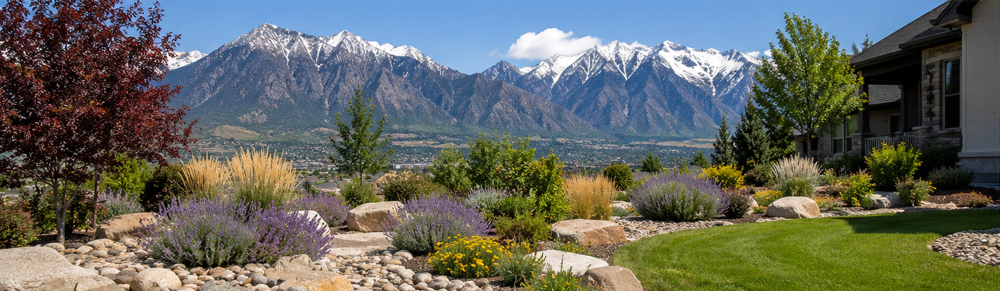
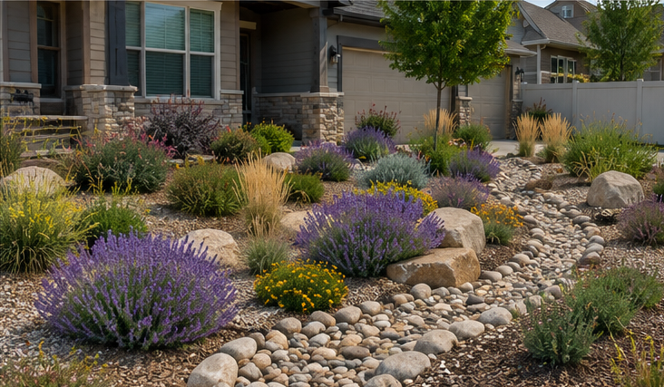

Welcome to WaterWise Landscaping for Northern Utah. This website shares ideas for creating beautiful yards that save water and thrive in Utah’s dry climate.
Learn about native plants, efficient irrigation, and landscaping techniques that help conserve water while keeping your yard attractive.

©Mary Burham 2026. All rights reserved.
Email Us